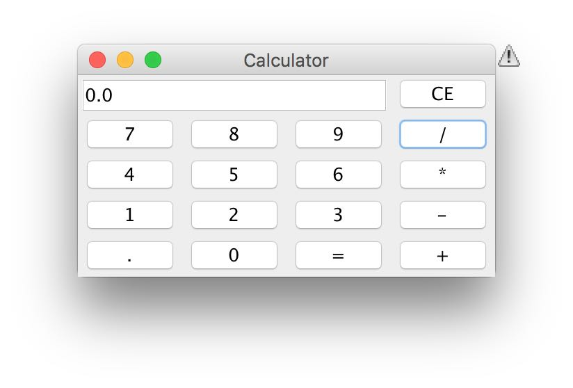
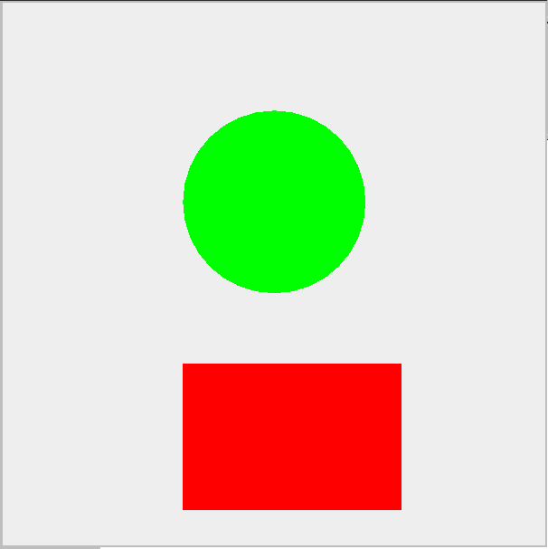
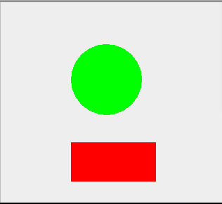

Homework7 |
a demo Calculator |
7-1 snapshot on defferent browsers |
|  |
OS Mac11, on safari 9, made by Jasmine Xie, 22/11/2015 |
|  |
OS Mac11, on safari 9, made by Jasmine Xie, 19/11/2015 |
 |
OS Win10, on firefox 42.0 , made by Marc Wong, 20/11/2015 |
|  |
OS Win 10, on IE 11 , made by Marc Wong, 20/11/2015 |
7-2 graph |
7-3 graph with params |
7-4 The Difference Between AWT and Swing Graphics |
Abstract Windows Toolkit (AWT) is the original Java GUI tool kit. AWT's main advantages are that it comes standard with every version of Java technology, including Java implementations in old Web browsers, and it is very stable. AWT is a very simple tool kit with limited GUI components, layout managers, and events.As a result -- and unfortunately -- some commonly used components, such as Tables, Trees, Progress Bars, and others, are not supported. For applications that need more component types, you need to create them from scratch. This is a big burden. Swing is built on parts of AWT. All Swing parts are also AWT parts. Swing uses the AWT event model and support classes, such as Colors, Images, and Graphics.Swing graphics applies more elements for the programmer to use. Swing may not be able to take advantage of hardware GUI accelerators and special host GUI operations. As a result, Swing applications may be slower than AWT. |